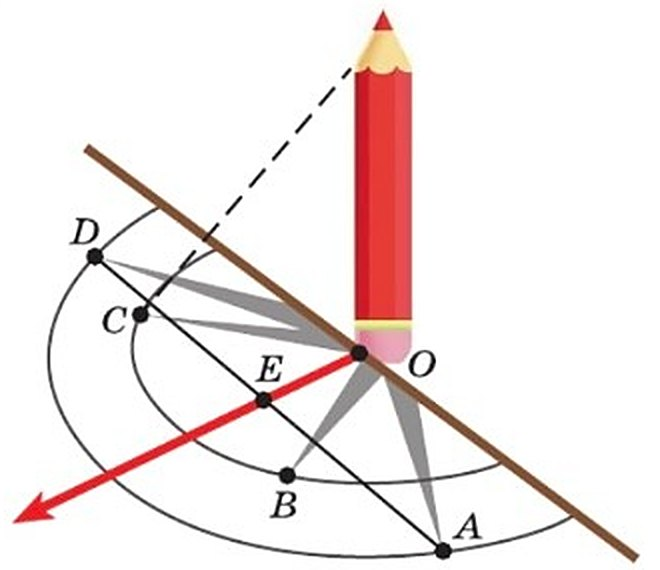
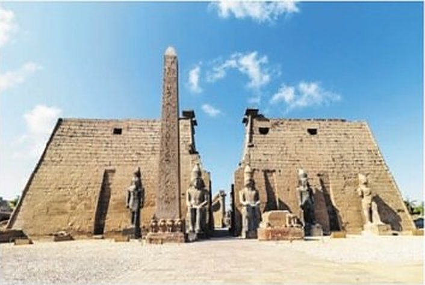
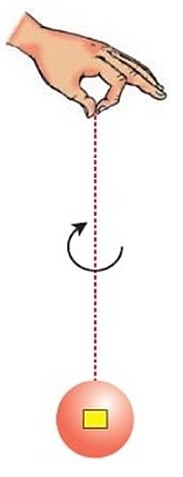
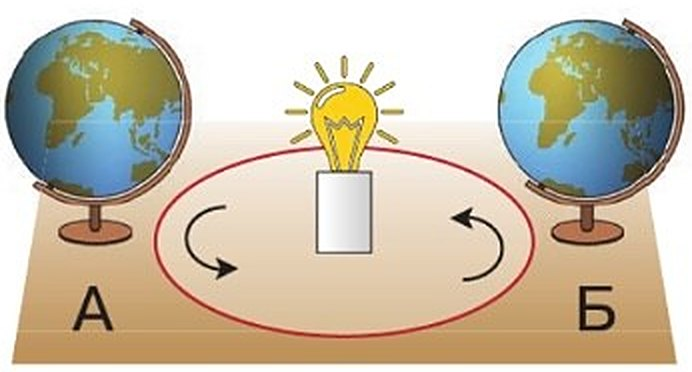

Проводим наблюдения и опыты
Как люди изучают природу? Тремя способами: наблюдают, ставят опыты (эксперименты) и измеряют.
Наблюдая, человек замечает, что происходит в природе, и копит знания. Опыт помогает построить модель природного явления — и понять, почему оно происходит. А измерения дают числа. Все эти способы очень древние.
Как высоко Солнце? Люди давно заметили: за день Солнце то поднимается над горизонтом, то опускается. Чтобы определять высоту Солнца, ещё в древности придумали простой астрономический инструмент — гномон (рис. 21).
Гномон — это вертикальный шест (или простой стержень) на ровной горизонтальной площадке.
В солнечный день шест отбрасывает тень. С восхода до полудня тень всё короче, а после полудня до заката — всё длиннее. И ещё тень «движется» — меняет направление.
В полдень линия тени совпадает с линией меридиана — с направлением север—юг. Проверить это можно самой: сделать гномон из картона и карандаша.
Человек изучает природу с помощью наблюдений, опытов (экспериментов), измерений. Наблюдая за природными явлениями, человек накапливает знания о них. Опыт позволяет создать модель природного явления, чтобы понять его причины. Измерения позволяют получить количественные характеристики природных объектов и явлений. Все эти методы изучения природы уходят глубоко в древность.
Наблюдая за небесным светилом, человек видел, как изменяется высота Солнца над горизонтом в течение дня. Для определения высоты Солнца ещё в древности использовали простой астрономический инструмент — гномон (рис. 21). Гномон состоит из вертикального шеста (или простого стержня), укреплённого на горизонтальной плоскости. В солнечный день шест отбрасывает тень, длина которой от восхода Солнца до полудня непрерывно уменьшается, а от полудня до заката увеличивается. При этом тень меняет направление — «движется». В полдень, как вы знаете, линия тени совпадает с линией меридиана, т. е. с направлением север—юг. Проверить это можно на опыте, изготовив самостоятельно простейший гномон.

Меридиан — линия на глобусе и на карте, которая идёт от Северного полюса к Южному. Все меридианы сходятся на полюсах, и каждый показывает направление север—юг. Учебник пишет «как вы знаете», но подробно меридианы будут позже, в разделе «План и карта». Найди на своём глобусе линии, которые бегут от полюса к полюсу, — это меридианы. Найди Москву и веди пальцем по ближайшему меридиану вверх: придёшь к Северному полюсу. А вниз — к Южному.
замечаем, что происходит: за день Солнце то выше, то ниже
строим модель, чтобы понять причину: глобус и лампа
Наблюдение отвечает на вопрос «что происходит?», опыт — «почему?».
1. Почему в полдень тень самая короткая?
2. Гномон показывает только тень. Как же по нему узнают высоту Солнца?
3. Летом ты гуляешь во дворе до 10—11 вечера, а осенью темнеет рано. Это наблюдение, опыт или измерение?
Шаг за шагом. Наблюдаем за тенью
1-й шаг. Вырежи из плотного картона круг диаметром 25—30 см. Центр круга — точка O. Аккуратно проделай в нём отверстие и вставь карандаш прямо, вертикально. Это твой гномон.
2-й шаг. Поставь гномон туда, где много солнца и ничто не загораживает лучи, — например, на широкий подоконник.
3-й шаг. Начни утром в солнечный день. Отметь карандашом или фломастером, где тень.
4-й шаг. Конец тени обозначь точкой A. Измерь длину тени — отрезок AO. Проведи через точку A окружность.
5-й шаг. Запиши: дату, время и длину тени.
6-й шаг. Сделай ещё 5—7 отметок — через 15 минут, через час, два, три. Каждый раз записывай данные и отмечай: Солнце выше или ниже, чем в прошлый раз? Закончи после полудня, ближе к закату.
7-й шаг. Оформи данные таблицей в тетради — и сделай вывод.
1. Наблюдаем за тенью
1-й шаг. Из плотного картона вырежьте круг диаметром 25—30 см. В центре круга, обозначенном точкой O, аккуратно проделайте отверстие и вертикально вставьте в него карандаш.
2-й шаг. Разместите гномон на хорошо освещённом месте, где ничто не препятствует солнечным лучам (например, на широком подоконнике).
3-й шаг. Начинайте наблюдение утром в солнечный день. Карандашом или фломастером отметьте положение тени от карандаша.
4-й шаг. Обозначьте конец тени точкой A и измерьте длину тени — отрезка AO. Проведите через точку A окружность.
5-й шаг. Запишите данные своих наблюдений (дату, время и длину тени).
6-й шаг. Сделайте ещё 5—7 отметок через разные промежутки времени (15 минут, один час, два часа, три часа). Записывайте данные. Отмечайте положение Солнца: выше на небе или ниже по сравнению с предыдущим замером. Закончите наблюдения после полудня, ближе к заходу Солнца.
7-й шаг. Оформите полученные данные в виде таблицы в тетради. Сделайте вывод.
| Отрезок | Время | Длина тени | Положение Солнца |
|---|---|---|---|
| OA | |||
| OB | |||
| OC | |||
| OD | |||
| … |
Тренажёр: гномон на подоконнике в зале
Москва, окно на юг, вид сверху. Выбери день, передвигай время — и смотри, как бежит тень. Нажимай «Отметить» — получится таблица, как в учебнике.
| Отрезок | Время | Длина тени | Положение Солнца |
|---|
В Москве полдень — когда тень самая короткая — наступает не в 12:00 по часам, а позже: в начале ноября около 12:15, весной и летом около 12:30. Часы показывают одно время на большую территорию, а Солнце доходит до самой высокой точки над Москвой чуть позже. Тренажёр показывает полдень для каждого дня.
4. Почему наблюдение начинают утром и заканчивают ближе к закату, а не делают одну отметку в полдень?
5. Твоя первая отметка A — в 10:00, а полдень в этот день — в 12:30. Около какого времени тень снова коснётся круга?
Шаг за шагом. Определяем направление
1-й шаг. Возьми гномон с отметками. Найди две точки, где тень касалась окружности. Одна из них — точка A, утренняя.
2-й шаг. Соедини эти две точки. Середину отрезка обозначь точкой E.
3-й шаг. Проведи прямую через точки E и O — центр гномона. Это полуденная линия. Она показывает направление север—юг.
Повтори опыт в другой солнечный день. Ты увидишь: тень на полуденной линии — самая короткая, а Солнце в этот момент выше всего.
Гномон — это ещё и часы. Если разметить площадку как циферблат, тень будет переходить от деления к делению и показывать время. Получатся солнечные часы. Только стержень надо наклонить к площадке и направить на Полярную звезду.
2. Определяем направление
1-й шаг. Используйте результат выполненного опыта. На площадке гномона найдите две точки, в которых тень касается проведённой окружности (одна из них — точка A).
2-й шаг. Соедините две точки и отметьте середину полученного отрезка точкой E.
3-й шаг. Проведите прямую через точки E и O (центр гномона). Эта прямая определяет полуденную линию и указывает направление север—юг.
Опыт можно повторить в другой солнечный день, чтобы убедиться, что тень, совпавшая с полуденной линией, окажется самой короткой, а высота Солнца наибольшей.
Гномон можно использовать как часть солнечных часов, разметив площадку как циферблат. Тень будет переходить от одного деления к другому, показывая время. Стержень нужно направить на Полярную звезду, наклонив его к площадке.
Полуденная линия указывает направление север—юг. Тень на полуденной линии — самая короткая, а высота Солнца — наибольшая.
6. Зачем повторять опыт в другой солнечный день?
7. Почему точка E лежит ровно посередине между утренней и послеполуденной точками?
Обелиски и Эратосфен
В Древнем Египте гномонами служили обелиски — высокие каменные столбы. Их ставили, чтобы поклоняться высшим силам (рис. 22).
Как Эратосфен узнал размеры Земли? Тень от обелисков и колонн помогла и учёному Эратосфену. Сложных приборов, как сегодня, у него не было. Он ориентировался на высоту Солнца над горизонтом.
Эратосфен работал в Александрийской библиотеке. Там накопилось множество сведений: где находятся разные места и какие между ними расстояния. Свои записи оставили воины Александра Македонского, греческие моряки и торговцы. Хранились там и наблюдения астрономов — прежде всего за углами падения солнечных лучей.
Эратосфен был уверен, что Земля — шар. Он умел измерять и делать выводы. И высчитал окружность Земли с очень небольшой погрешностью.
А ещё он «накрыл» мир сеткой: расчертил его «линиями, идущими рядом», и «полуденными линиями». Сегодня мы называем их параллелями и меридианами.
Гномонами в Древнем Египте служили обелиски, воздвигаемые как дань поклонения высшим силам (рис. 22). Позже, рассчитывая размеры Земли, Эратосфен использовал результаты наблюдений за тенью от обелисков и колонн. Когда Эратосфен вычислял размеры земного шара, он не имел в своём распоряжении таких сложных приборов, какие существуют сегодня. Учёный ориентировался на высоту Солнца над горизонтом. В Александрийской библиотеке, где он работал, накопилось множество материалов о расположении различных пунктов и расстояниях между ними. Сведения о своих походах оставляли и воины Александра Македонского, и греческие моряки, и многочисленные торговцы. Хранились в библиотеке и результаты измерений и наблюдений астрономов, прежде всего за углами падения солнечных лучей.
Эратосфен и сам был гением измерений и логических заключений. Уверенный в том, что Земля — шар, он с очень небольшой погрешностью высчитал окружность Земли. Кроме того, он решил «накрыть» мир сеткой, расчертить его «линиями, идущими рядом», и «полуденными линиями». Мы их знаем, как параллели и меридианы.

8. Сложных приборов у Эратосфена не было. Как же он высчитал окружность Земли?
9. В § 2 учебник писал, что Эратосфен «довольно точно» высчитал размеры Земли. А как сказано здесь? Это одно и то же?
10. Что общего у полуденной линии на твоём гномоне и «полуденных линиях» Эратосфена?
Опыты: как движется Земля
Дальше ты будешь изучать, как движется Земля. Представить это помогут три опыта.
Опыт 1. Шар на нитке. Возьми шар на прочной нитке. Подойдёт и круглый фрукт — яблоко или апельсин, — даже ёлочная игрушка. Сделай на шаре маленькую метку: гуашью, фломастером или наклейкой (рис. 23). Держи нитку двумя пальцами так, чтобы метку было видно.
Медленно крути нитку между пальцами в одну сторону. Шар вращается вокруг своей воображаемой оси и не отклоняется в сторону. Метка исчезает, потом появляется и возвращается на место. Это полный оборот вокруг своей оси.
Опыт 2. Покружись. Встань напротив окна (или двери, или картины). Медленно кружись, не сходя с места, пока снова не увидишь окно. Ты сделала полный оборот вокруг себя.
Так вокруг своей оси кружится балерина, когда делает фуэте. Так вертится детский волчок (юла). И так же вращается наша планета.
Опыт 3. Глобус и лампа. Нужны небольшой глобус и настольная лампа без плафона. На столе обозначь круг — это земная орбита. Можно нарисовать круг на большом листе или выложить длинной тонкой верёвочкой. В середину поставь лампу — это «Солнце» (рис. 24). Верхний свет не включай: пусть будет полумрак.
1-й шаг. Поставь глобус в точку А. Ось глобуса наклонена к плоскости орбиты — к столу — и «смотрит» в сторону лампы. Половина глобуса, обращённая к лампе, освещена. Туда попадает и Северный полюс. Другая половина в тени, и в ней Южный полюс.
2-й шаг. Вращай глобус вокруг оси, придерживая за подставку. Материки и океаны по очереди уходят в тень и возвращаются на свет. А Северный полюс всё время освещён, Южный — всё время в тени.
3-й шаг. Медленно веди глобус по орбите против часовой стрелки, не отрывая от стола. Угол наклона оси не меняется! Доведи глобус до точки Б — это половина пути. Теперь ось «смотрит» от лампы. Покрути глобус: теперь в тени всё время Северный полюс, а Южный освещён.
4-й шаг. Веди глобус дальше, пока не вернёшься в точку А. Ты прошла путь Земли вокруг Солнца.
Повтори путь несколько раз — и убедись: земная ось всегда наклонена одинаково, а Северное и Южное полушария в разных точках орбиты освещены Солнцем по-разному.
На следующих уроках вы будете изучать движения Земли и их следствия. Наглядно представить движения планеты помогут несколько опытов.
1. Возьмите шар и прикрепите его к прочной нити. (Если трудно найти подходящий шар, то можно использовать, например, фрукт округлой формы — яблоко или апельсин, или даже использовать ёлочное украшение.) На поверхности шара сделайте небольшую метку гуашью или фломастером либо маленькой наклейкой (рис. 23). Держите шар за нитку двумя пальцами так, чтобы метка была видна.
Начните аккуратно крутить в одну сторону нитку между пальцами. Шар начнёт двигаться вокруг своей воображаемой оси, не отклоняясь в сторону. Продолжайте медленно крутить шар. Метка вначале исчезнет из поля зрения, а потом появится вновь и вернётся на прежнее место. Так шар сделал полный оборот вокруг своей оси.
2. Встаньте напротив окна (или двери, или картины на стене). Начинайте медленно кружиться, не сходя с места, пока снова не увидите окно (или дверь, или картину). Вы сделали полный оборот вокруг себя. Так вокруг своей оси кружится балерина, когда исполняет движение фуэте. Так же вертится детский волчок (юла), так же вращается наша планета.
3. Приготовьте небольшой глобус и настольную лампу без плафона. На ровной поверхности стола обозначьте круг, изображающий земную орбиту. (Можно нарисовать круг на большом листе, а можно использовать длинную тонкую верёвочку.) В середине круга установите лампу — она будет служить «Солнцем» (рис. 24). Не включайте верхний свет — желательно, чтобы вокруг был полумрак.
1-й шаг. Поставьте глобус в точку А. Обратите внимание, что ось глобуса наклонена под углом к плоскости орбиты (в нашем опыте — плоскости стола) и «смотрит» в сторону лампы. Внимательно рассмотрите, как падает свет от лампы на глобус. Обращённая к источнику света половина глобуса освещена. В освещённую зону входит и Северный полюс. Противоположная половина глобуса находится в тени. В тени остался и Южный полюс.
2-й шаг. Вращайте сам глобус вокруг оси, придерживая его за подставку. Наблюдайте за Северным полюсом. Вы видите, что материки и океаны последовательно пропадают в тени и вновь возвращаются в освещённую зону. А Северный полюс и прилегающие территории всё время остаются освещёнными. Южный же полюс, напротив, всё время остаётся в тени.
3-й шаг. Начинайте медленно двигать глобус по орбите в направлении против часовой стрелки. Не отрывайте глобус от поверхности стола — вы видите, что угол наклона земной оси остаётся неизменным. Доведите глобус до точки Б (это половина пути). В этом положении ось глобуса «смотрит» в противоположную от лампы сторону. Наклон оси всё тот же! Вновь рассмотрите, как падает свет от лампы на глобус, и вращайте глобус вокруг оси. В тени теперь всё время остаётся Северный полюс, а Южный полюс освещён.
4-й шаг. Продолжайте вести глобус по линии орбиты, пока не совершите полный оборот, т. е. пока не вернётесь в точку А — в исходное положение.
Таким образом вы проследили путь Земли вокруг Солнца по своей орбите. Повторите этот путь несколько раз, чтобы убедиться, что: земная ось всегда одинаково наклонена к плоскости орбиты; Северное и Южное полушария Земли в разных положениях на орбите освещены Солнцем по-разному.


Земная ось всегда одинаково наклонена к плоскости орбиты. Северное и Южное полушария Земли в разных положениях на орбите освещены Солнцем по-разному.
как волчок: материки по очереди уходят в тень и возвращаются
как глобус вокруг лампы: от точки А до Б — половина пути
Земля делает и то и другое одновременно — об этом § 10.
11. В опыте с шаром метка исчезает и снова появляется. Что на Земле похоже на эту метку?
12. Почему в точке А Северный полюс всё время освещён, а в точке Б — всё время в тени, хотя ось не поворачивали?
13. Балерина делает фуэте, волчок вертится, ты кружишься. Что общего у этих трёх движений?
Итоги: опыты дома
В этом параграфе нет вопросов и «Запомните» — он весь из опытов. Их надо не прочитать, а сделать.
Ниже — чек-лист. Отмечай, что уже получилось. Галочки запоминаются на этом устройстве.
В учебнике у этого параграфа нет вопросов и рубрики «Запомните»: весь параграф — практическая работа «Проводим наблюдения и опыты».
Чек-лист: опыты дома
Отмечай, что уже сделала. Не всё сразу: гномону нужен солнечный выходной, а глобусу — вечер с полумраком.
Опыт с глобусом понадобится сразу в § 10 «Движения Земли»: там ты узнаешь, что из этих движений получается — смена дня и ночи и времена года.
Проверь себя
Нажимай по очереди — с 1-го шага до 7-го. Подсмотреть можно в разделе «Шаг за шагом. Наблюдаем за тенью».
Иногда в одном деле есть и то и другое. Выбирай главное.
Заметить, что за день Солнце то выше, то ниже
Человек наблюдает за природным явлением и запоминает.
Измерить линейкой длину тени AO
Измерение даёт число — сантиметры.
Глобус и лампа показывают, как Земля идёт вокруг Солнца
Это модель природного явления — опыт.
Крутить шар на нитке и следить за меткой
Шар — модель Земли, которая вращается вокруг оси.
Записать время каждой отметки
Время по часам — тоже измерение.
Летом во дворе светло до 10 вечера, а осенью темнеет рано
Ты это заметила сама — наблюдение.
Эратосфен высчитал окружность Земли
Он был «гением измерений»: получил число.
Ось «смотрит» в сторону лампы
В точке А северный конец оси наклонён к «Солнцу».
Северный полюс всё время освещён
В точке А освещённая половина глобуса захватывает Северный полюс.
Ось «смотрит» от лампы
В точке Б глобус по другую сторону «Солнца».
Северный полюс всё время в тени
В точке Б в тени остаётся Северный полюс, а Южный освещён.
Угол наклона оси
Угол наклона земной оси остаётся неизменным.
Материки по очереди уходят в тень и возвращаются
Так бывает всегда, когда глобус вращается вокруг оси.
1. Когда тень от гномона самая короткая?
2. Что указывает полуденная линия?
3. Что служило гномонами в Древнем Египте?
4. Что высчитал Эратосфен с очень небольшой погрешностью?
5. Как сегодня называют «полуденные линии» Эратосфена?
6. Что не меняется, когда глобус идёт по орбите вокруг лампы?
Расскажи вслух
Как изучают природу
- Наблюдения: человек замечает природные явления и накапливает знания.
- Опыты (эксперименты): модель природного явления, чтобы понять его причины.
- Измерения: количественные характеристики. Все эти методы уходят в древность.
Гномон и тень
- Гномон — вертикальный шест на горизонтальной площадке; по тени определяют высоту Солнца.
- С утра до полудня тень укорачивается, после полудня удлиняется и поворачивает.
- В полдень тень самая короткая и лежит по линии север—юг.
Как найти направление север—юг
- Отметить утром конец тени A и провести через него окружность.
- После полудня найти вторую точку на окружности, середину отрезка — E.
- Прямая E—O — полуденная линия: направление север—юг.
Эратосфен и обелиски
- В Древнем Египте гномонами служили обелиски.
- Эратосфен по высоте Солнца и сведениям Александрийской библиотеки высчитал окружность Земли.
- Он расчертил мир «линиями, идущими рядом», и «полуденными линиями» — параллелями и меридианами.
Опыты: как движется Земля
- Шар на нитке, кружение на месте, волчок — оборот вокруг своей оси.
- Глобус вокруг лампы: в точке А Северный полюс освещён, в точке Б — в тени.
- Земная ось всегда наклонена одинаково, полушария освещены по-разному.